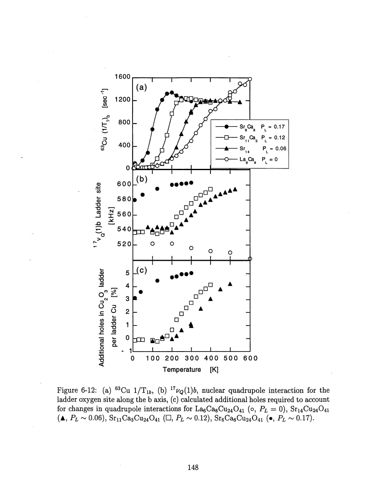
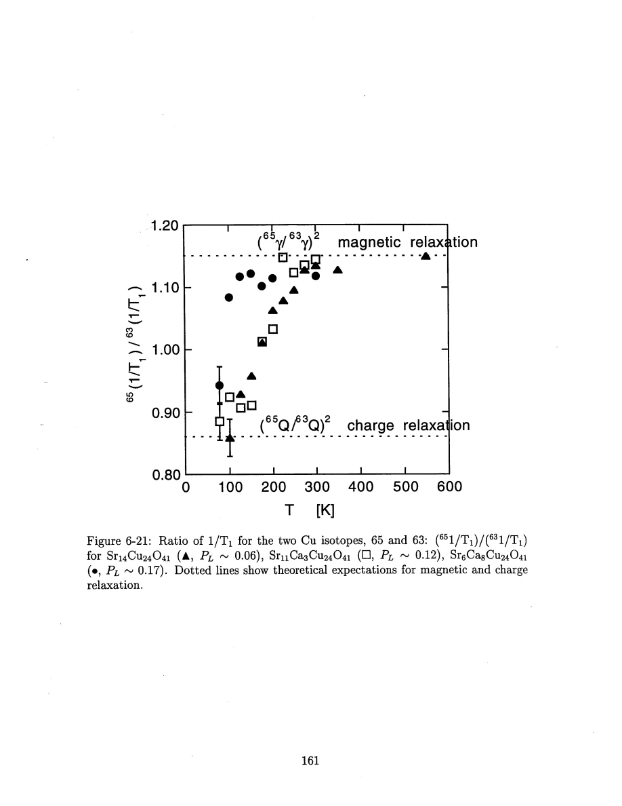
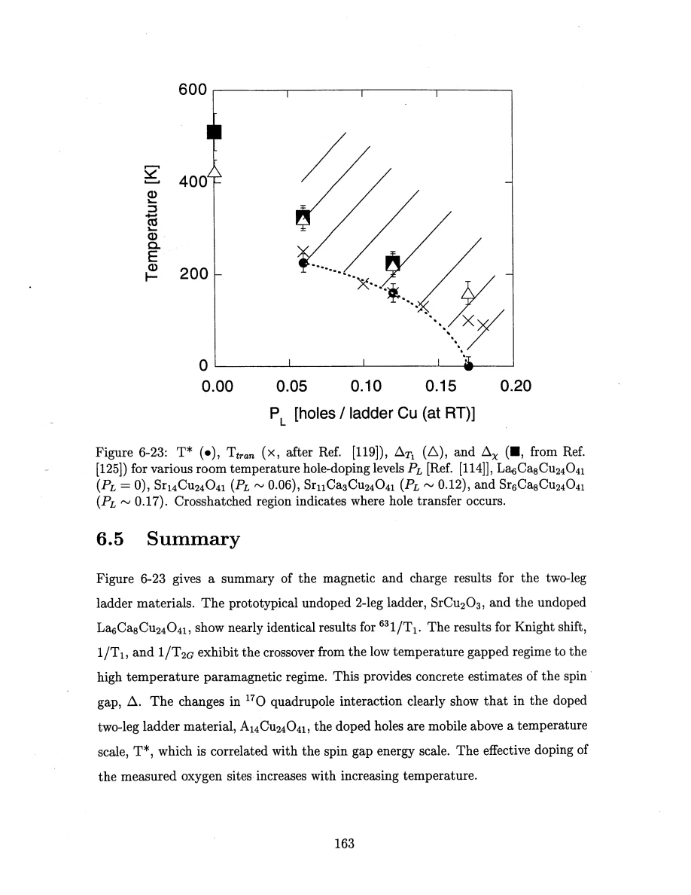

Thurber · supplied source 1999 · chapter unit
Temperature-dependent charge in the ladder layer
Combine EFG tensor changes, isotope relaxation and independent charge measurements; infer additional holes relative to a baseline.
The question: What supports hole redistribution rather than simple thermal expansion as the origin of changing quadrupole frequencies?
Before you start: the terms you need
- Spin-1/2 Heisenberg antiferromagnet: neighboring electron spins interact through J Sᵢ·Sⱼ with J>0.
- Hyperfine coupling: the electronic spin polarization produces a local magnetic field at a nucleus.
- Wave vector q: distinguishes uniform spin fluctuations near q=0 from staggered fluctuations near the antiferromagnetic vector Q.
- Correlation length ξ: a distance over which staggered electron-spin correlations remain appreciable.
- NMR/NQR: applied-field magnetic resonance versus resonance in the electric field gradient with no applied static field.
- Historical scope: these are experiments and interpretations reported in the supplied 1999 thesis, not a current review of quantum-spin transport.
See → explain → check
Follow the idea in 3 pictures.
Picture 1 / 3
Compare the candidate sources of EFG change
Look for: Lattice geometry, orbital response and on-site hole population enter the same measured tensor.
Swipe across the picture to read every label, or enlarge it below.
- Thermal lattice change
- Antishielding change
- Hole redistribution
Teaching schematic. Source analysis of alternatives. Numerical hole changes retain point-charge and orbital assumptions; the diagram does not prove an exhaustive inverse solution.
A large frequency change must be assessed against several physical causes.
Check the original: PDF p. 153 · PDF p. 156 · PDF p. 157
Picture 2 / 3
Read additional holes relative to a baseline
Look for: Subtract the low-temperature EFG, then infer orbital-population changes.
Swipe across the picture to read every label, or enlarge it below.
- Measured ΔEFG tensor
- Account for lattice terms
- Infer additional orbital holes
Teaching schematic. The temperature-independent lattice contribution remains uncertain. Powder samples with fewer tensor components need extra assumptions.
The result is Δn, not the absolute n.
Check the original: PDF p. 148 · PDF p. 158 · PDF p. 159
Picture 3 / 3
Keep static charge and charge dynamics separate
Look for: An EFG shift measures the average local charge environment; isotope relaxation detects fluctuations.
Swipe across the picture to read every label, or enlarge it below.
- Quadrupole-frequency shift
- Cu isotope relaxation
Teaching schematic. R65/R63 near 1.148 is the magnetic limit and near 0.860 the quadrupolar limit. Mixed-channel interpretation assumes comparable excitation and recovery analysis.
Together they constrain a charge crossover more than either alone.
Check the original: PDF p. 160 · PDF p. 161 · PDF p. 162
Explain it back.
Try answering aloud before opening the explanation.
Why is an isovalent Sr-to-Ca substitution relevant to hole doping of the ladder?
It can alter lattice dimensions and redistribute the existing holes between the chain and ladder layers even though their total number is unchanged.
What prevents the EFG analysis from giving an absolute ladder hole count?
The nearly temperature-independent lattice gradient and antishielding contributions are uncertain. Relative changes are more reliable than absolute offsets.
Is a charge-relaxation peak the same thing as the onset of a static EFG shift?
No. The peak occurs when charge fluctuations overlap the nuclear frequency. The static shift reflects an averaged local charge environment; their temperatures need not coincide.
Go deeper Follow the full argument
A quadrupole-frequency change has several possible causes
The doped A₁₄Cu₂₄O₄₁ ladders show large temperature changes of oxygen quadrupole components, unlike the small thermal trend of undoped La₆Ca₈Cu₂₄O₄₁. The thesis identifies onset temperatures T* around 210 K for Sr₁₄ and 140 K for Sr₁₁Ca₃; for Sr₆Ca₈ the onset falls below or close to the measured low-temperature range. A frequency change is not itself a direct hole counter. The local electric field gradient is decomposed into an on-site hole term and a lattice term modified by the Sternheimer factor. Thermal expansion changes the lattice contribution, while changed orbital occupation changes the on-site component and neighboring ionic charges. Point-charge calculations estimate thermal changes of order a percent, far below measured changes up to roughly 15–20%. The copper and oxygen signs also constrain simple local bond-distortion accounts. These are arguments against specified alternatives, not an exact microscopic charge calculation.
PDF p. 152 · PDF p. 153 · PDF p. 154 · PDF p. 155 · PDF p. 156 · PDF p. 157
The inferred hole count is a relative one
Using tensor components at leg oxygen, rung oxygen and copper where available, Thurber estimates the additional orbital holes required to reproduce the temperature-dependent EFG changes. The analysis includes both the direct gradient of an on-site hole and its change to neighboring-ion lattice fields. It uses the low-temperature EFG as a reference to avoid uncertain temperature-independent lattice offsets. Therefore Figure 6-12(c) gives a change in visible ladder-layer hole population, not the absolute hole density. For Sr₁₄Cu₂₄O₄₁ at 500 K the orbital decomposition puts most of the change on oxygen pσ orbitals, with more uncertain copper occupation. The more limited b-axis powder data assume a similar orbital distribution to the single-crystal case. Sr-to-Ca substitution preserves the total ionic valence, yet changes lattice structure and hole partition between chains and ladders. Room-temperature hole labels inferred from optical work must not be treated as temperature-independent calibrated occupancies at every nuclear site.
PDF p. 137 · PDF p. 157 · PDF p. 158 · PDF p. 159 · PDF p. 163
Relaxation and transport supply independent checks and leave an alternative open
The copper isotope ratio drops away from the magnetic γ² limit toward the quadrupolar Q² limit below the magnetic crossover, showing that electric-gradient fluctuations contribute to relaxation. For Sr₁₄ the quadrupolar component peaks around 100 K, when the relevant charge motion becomes slow enough to overlap the nuclear frequency. That dynamic evidence differs from the static EFG shift. Optical Drude-weight changes and resistivity activation anomalies occur on related temperature scales, supporting a charge redistribution or mobility crossover. The favored account transfers holes from chains into ladders as temperature rises above T*. Another possibility is a change in which sites are visible when holes localize or segregate. The thesis argues against a simple version because it does not see the expected new line broadening or splitting at T* and the dynamic slowing is lower in temperature, but it explicitly does not completely exclude it. Correlated spin and charge scales do not by themselves prove a microscopic cause or superconducting pairing mechanism.
PDF p. 159 · PDF p. 160 · PDF p. 161 · PDF p. 162 · PDF p. 163
Translate the mathematics Essential equations and their meaning
eq = eqhole + (1−γ∞) eqlattice
Symbols: eq: principal electric-field gradient; eqhole: on-site orbital contribution; γ∞: Sternheimer antishielding factor; eqlattice: surrounding-ion contribution.
Ionic decomposition used to compare mechanisms. It is not a model-free measurement of hole number.
Δn_ladder(T) is measured relative to the low-T EFG baseline
Symbols: Δn: inferred additional visible ladder holes; T: temperature.
A statement of the inversion’s reference, not an absolute occupancy formula. The source explicitly cannot determine n_ladder absolutely.
R65/R63 → (γ65/γ63)² or (Q65/Q63)²
Symbols: R: copper relaxation rate; γ: nuclear gyromagnetic ratio; Q: nuclear quadrupole moment.
Magnetic and electric-gradient limiting tests. An intermediate ratio can reflect mixed contributions, not a new isotope-dependent electronic phase.
Read the evidence Guided original source pages

PDF p. 148

PDF p. 161

PDF p. 163
What the evidence supports—and where it stops
- Relative EFG inversion uses a simplified ionic picture and assumed orbital distribution for incompletely measured tensors.
- The localization/segregation alternative is argued against but not completely excluded by the source.
- The correlation of crossover scales does not establish causation or a pairing mechanism.
Source version, reading coverage and preservation
Read all extracted substantive text on one-based PDF pages 14–204, including chapters 1–8 and appendices A–C; checked the title and abstract and visually inspected 66 full rendered pages for cited figures, formulas, tensor conventions and extraction ambiguities. PDF page numbers match the printed body page numbers.
Reviewed body pages: 14, 15, 16, 17, 18, 19, 20, 21, 22, 23, 24, 25, 26, 27, 28, 29, 30, 31, 32, 33, 34, 35, 36, 37, 38, 39, 40, 41, 42, 43, 44, 45, 46, 47, 48, 49, 50, 51, 52, 53, 54, 55, 56, 57, 58, 59, 60, 61, 62, 63, 64, 65, 66, 67, 68, 69, 70, 71, 72, 73, 74, 75, 76, 77, 78, 79, 80, 81, 82, 83, 84, 85, 86, 87, 88, 89, 90, 91, 92, 93, 94, 95, 96, 97, 98, 99, 100, 101, 102, 103, 104, 105, 106, 107, 108, 109, 110, 111, 112, 113, 114, 115, 116, 117, 118, 119, 120, 121, 122, 123, 124, 125, 126, 127, 128, 129, 130, 131, 132, 133, 134, 135, 136, 137, 138, 139, 140, 141, 142, 143, 144, 145, 146, 147, 148, 149, 150, 151, 152, 153, 154, 155, 156, 157, 158, 159, 160, 161, 162, 163, 164, 165, 166, 167, 168, 169, 170, 171, 172, 173, 174, 175, 176, 177, 178, 179, 180, 181, 182, 183, 184, 185, 186, 187, 188, 189, 190, 191, 192, 193, 194, 195, 196, 197, 198, 199, 200, 201, 202, 203, 204. Bibliography pages 205–212 were not independently verified against the cited external works. The guide explains final results and assumptions rather than reproducing every algebraic step, electronics part number or data point. Remaining rendered pages not listed in the private review were not claimed as visually read.
Source SHA-256: aca6c34f95675f0fb188d45f9148bacce2e832f0956949025eae42f1e1abf618. Original file bytes preserved locally, and in this room’s original download.
Thesis - Thurber - 1999 - O and Cu NMR spin dynamics in low dimensional antiferromagnets.pdf